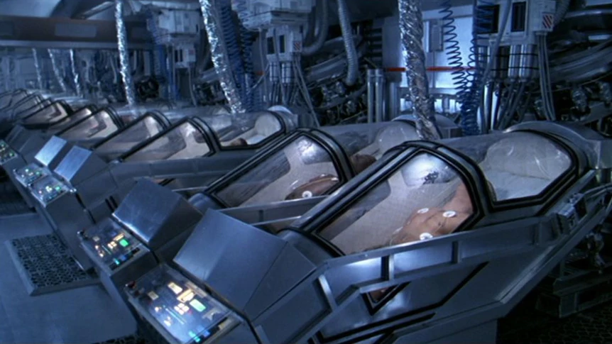

Welcome to Cryo-Preserve, a place where you shall find life everlasting! Sign up now to become a member and reserve an exclusive spot.
What is cryonics? Cryonics is the principle of storing human remains inside chambers of extremely low temperature, in order to preserve them for restoration at a later date.
With our new top of the line cryo-technology, we are able to store and preserve anyone at a temperature of -200 degrees Celsius. Through our generous investors and donors, we have been able to procure a large inventory of chambers capable of sustaining hundreds of members, however spots are filling quickly.
Using the power of cryonics, we can preserve your vital organs for hundreds, if not thousands of years without any decay to the intracellular anatomy. Our researchers have been hard at work inventing new ways to restore life to those who have passed too early. Our estimates predict a breakthrough in resuscitative technology at around the year 2500. At that point, we will be able to smoothly transition you back into the land of the living.